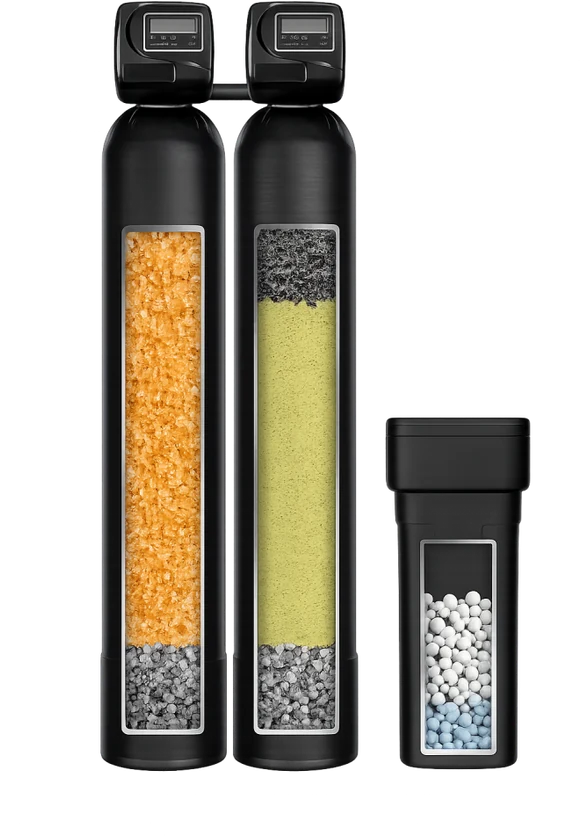
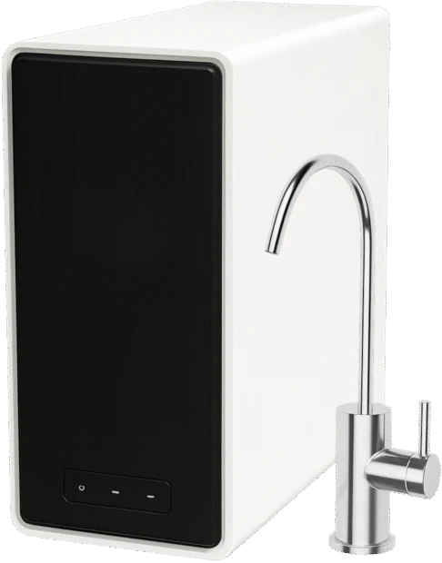

Most Popular
Complete Home System
Whole-home softening and carbon filtration paired with the HW800 AlkaPro tankless RO — treated water at every tap, plus reverse osmosis at the kitchen sink.
Free quote
Learn more
Central Florida water is hard. Your house is paying for it.
Homes across Orange, Seminole, Osceola, Lake and Volusia counties test between 10 and 18 grains per gallon. That's scale in your water heater, film on your shower door, and laundry that never comes out soft. We fix it, usually in a single afternoon.
Or call (407) 555-0142 — you'll reach someone local.
Professional-grade equipment. A price you see before you commit. A licensed Florida plumber doing the work.
Give us a call. We'll ask where your water comes from, how many people live there, and what you're noticing at the tap. Two minutes.
One flat installed price, before anything is ordered. Our price-match promise stands behind it. No in-home pressure close, ever.
Two to four hours. A licensed Florida plumber does the work. We leave the space cleaner than we found it.
City water and well water are different problems with different answers. These four cover most Central Florida homes.
Whole-home softening and carbon filtration paired with the HW800 AlkaPro tankless RO — treated water at every tap, plus reverse osmosis at the kitchen sink.

Two dedicated tanks for city water — one for filtration, one for softening. Each job gets its own media bed.

Iron staining and rotten-egg sulfur odor handled before the water reaches your house, with softening built in.

Seven-stage tankless reverse osmosis producing 800 gallons a day, finished with alkaline remineralization. No storage tank, no wait.
There are a few ways to solve hard water in Central Florida. Here's how they compare.
| Feature | Orlando Water Pros | Culligan | Kinetico | Leaf Water | Home Depot DIY |
|---|---|---|---|---|---|
| FL licensed plumber install | ✓ | Varies | Varies | Varies | ✗ DIY |
| Lifetime limited warranty | ✓ | 1 year | 10 year | 1 year | ✗ |
| No long-term contracts | ✓ | Multi-year typical | Multi-year typical | Multi-year typical | N/A |
| Transparent pricing | ✓ | ✗ | ✗ | ✗ | ✓ |
| Same-week installation | ✓ | 2–3 weeks | 2–3 weeks | 2–3 weeks | DIY timeline |
Our own terms are shown in full. Competitor terms vary by dealer and location, so we list them as "varies" rather than guess — confirm current terms directly with any company you're considering.
Hardness changes across Central Florida, and it changes inside Orlando too, depending on which plant serves your street.
| City | Hardness | Level | What we see most |
|---|---|---|---|
| OrlandoOrange County | 6–15gpg | Moderate–hard | Chloramine taste and odor · Scale on fixtures and glassware |
| Winter ParkOrange County | 10–15gpg | Hard | Hard water scale · Water heaters failing early |
| KissimmeeOsceola County | 12–18gpg | Hard | High hardness · Sulfur (rotten-egg) odor |
| St. CloudOsceola County | 12–18gpg | Hard | High hardness · Iron staining on wells |
| ClermontLake County | 15–25gpg | Very hard | Very high hardness · Iron and sulfur on wells |
| Lake MarySeminole County | 10–16gpg | Hard | Hard water scale · Chlorine taste |
| SanfordSeminole County | 10–16gpg | Hard | Hard water scale · Occasional sulfur odor |
| Altamonte SpringsSeminole County | 10–16gpg | Hard | Hard water scale · Soap scum |
| OviedoSeminole County | 10–16gpg | Hard | Hard water scale · Spotting on glassware |
| ApopkaOrange County | 12–18gpg | Hard | High hardness · Iron staining |
| Winter GardenOrange County | 12–18gpg | Hard | High hardness · Scale on new fixtures |
| OcoeeOrange County | 12–18gpg | Hard | High hardness · Chlorine taste and odor |
| WindermereOrange County | 10–16gpg | Hard | Hard water scale · Well iron and sulfur |
| DeltonaVolusia County | 12–18gpg | Hard | Iron staining · Sulfur odor |
Figures are typical published ranges for each area's supply, not a measurement of your address. Water differs between neighborhoods depending on which plant or well field serves you, and private wells vary property to property. Above 7 gpg is considered hard.
What our systems carry, and who puts them in your house.
The carbon media, gravel, holding tanks and main valves in our systems carry NSF certification, including carbon from Jacobi Carbons.
Our components are certified under the NSF Drinking Water System Components program, the standard covering everything your water actually touches.
Our softeners are certified under the NSF program for cation exchange water softeners, the category that covers ion-exchange performance.
Water Quality Association Gold Seal certification, held on top of NSF certification. Two independent bodies, same equipment.
Every install is done by a licensed, insured Florida plumber.
Factory-trained installation and factory-backed equipment, with a written limited warranty on every whole-home system we put in.
Tell us about your home. We'll come back with a flat installed price in writing.
The fastest way to get a price is a quick call. You'll reach someone local who knows Central Florida water — not a national call center.
Call (407) 555-0142Prefer email? Write to orlandowaterpros@gmail.com and we'll come back to you the same business day.
Or start a chat using the button in the corner of this page.
Call and you'll reach someone local who knows Central Florida water. Not a national call center.
We're a mobile service. Every quote and installation happens at your home, anywhere in our Central Florida service area.
See all cities we serveSoap lathers. Hair rinses clean. The film hard water leaves on your skin is gone the first time you use it.
No white film, no cloudy glasses coming out of the dishwasher.
Detergent finally does its job. Towels come out soft instead of stiff, and fabrics last longer.
Carbon filtration pulls the disinfectant taste and smell out at every tap, not just the kitchen.
Lifetime on tanks and dry parts, five years on the valve, board and media, one year of labor. The full terms are published, not buried.
Find the same certified system cheaper and we'll beat it. Flat installed pricing, in writing, before you commit.
Tell us about your home and we'll give you a flat installed price in writing. No charge for the quote, and no pressure.